library(tidyverse) # Pack of most used libraries for data science
library(readxl) # Import excel files
library(skimr) # Summary statistics
library(mclust) # Model based clustering
library(cluster) # Cluster analysis
library(factoextra) # Visualizing distances8 Cluster Analysis
Do it yourself with R
Copy the script ClusterAnalysis.R and paste it in your session.
Run each line using CTRL + ENTER
Based on a dataset of European Airports, we will create clusters based on the observations.
Your task
Create and assess the many types of clustering methods.
8.1 Load packages
8.2 Dataset
Included variables:
Code- Code of the airportAirport- Name of the airportOrdem- ID of the observationsPassengers- Number of passengersMovements- Number of flightsNumberofairlines- Number of airlines at each airportMainairlineflightspercentage- Percentage of flights of the main airline of each airportMaximumpercentageoftrafficpercountry- Maximum percentage of flights per countryNumberofLCCflightsweekly- Number of weekly low cost flightsNumberofLowCostAirlines- Number of low cost airlines of each airportLowCostAirlinespercentage- Percentage of the number of low cost airlines in each airportDestinations- Number of flights arriving at each airportAverage_route_Distance- Average route distance in kmDistancetoclosestAirport- Distance to closest airport in kmDistancetoclosestSimilarAirport- Distance to closest similar airport in kmAirportRegionalRelevance- Relevance of the airport in a regional scale (0 - 1)Distancetocitykm- Distance between the airport and the city in kmInhabitantscorrected- Population of the citynumberofvisitorscorrected- Number of visitors arrived in the airportGDPcorrected- Corrected value of the Gross Domestic ProductCargoton- The total number of cargo [ton] transported in a certain period multiplied by the number of flights.
8.2.1 Import dataset
data = read_excel("../data/Data_Aeroports_Clustersv1.xlsx")
data = data.frame(data) # as data frame only8.2.2 Get to know your dataset
Take a look at the first values of the dataset
head(data, 5) Code Ordem Airport Passengers Movements Numberofairlines
1 NCE 1 Nice Côte d'Azur 9830987 119322 64
2 CGN 2 Cologne Bonn 9742300 132200 29
3 LPA 3 Gran Canaria 9155665 101557 47
4 ALC 4 Alicante 9139479 74281 35
5 LTN 5 London Luton 9129053 83013 11
Mainairlineflightspercentage Maximumpercentageoftrafficpercountry
1 18 20
2 33 13
3 17 26
4 29 23
5 37 22
NumberofLCCflightsweekly NumberofLowCostAirlines LowCostAirlinespercentage
1 256 18 28.12500
2 351 12 41.37931
3 259 19 40.42553
4 300 18 51.42857
5 227 8 72.72727
Destinations Average_Route_Distance DistancetoclosestAirport
1 104 1253 23.66681
2 189 1721 63.45766
3 116 3143 122.58936
4 160 1701 63.09924
5 87 1582 45.13247
DistancetoclosestSimilarAirport AirportRegionalrelevance Distancetocitykm
1 223.83824 0.8698581 6
2 63.45766 0.5127419 15
3 132.45082 0.7840877 19
4 134.50558 0.8098081 9
5 45.13247 0.1947903 55
Inhanbitantscorrected numberofvisitorscorrected GDPcorrected Cargoton
1 3551805.0 2152829.8 26300 11223.39
2 4180133.5 1151381.6 30100 562.00
3 705807.8 1678968.6 20700 25994.00
4 1508358.6 1944196.8 25000 3199.73
5 1562709.8 181063.5 32000 28698.00Check summary statistics of variables
skim(data)| Name | data |
| Number of rows | 32 |
| Number of columns | 21 |
| _______________________ | |
| Column type frequency: | |
| character | 2 |
| numeric | 19 |
| ________________________ | |
| Group variables | None |
Variable type: character
| skim_variable | n_missing | complete_rate | min | max | empty | n_unique | whitespace |
|---|---|---|---|---|---|---|---|
| Code | 0 | 1 | 3 | 3 | 0 | 32 | 0 |
| Airport | 0 | 1 | 4 | 35 | 0 | 32 | 0 |
Variable type: numeric
| skim_variable | n_missing | complete_rate | mean | sd | p0 | p25 | p50 | p75 | p100 | hist |
|---|---|---|---|---|---|---|---|---|---|---|
| Ordem | 0 | 1 | 16.50 | 9.38 | 1.00 | 8.75 | 16.50 | 24.25 | 32.00 | ▇▇▇▇▇ |
| Passengers | 0 | 1 | 20750710.88 | 17601931.34 | 456698.00 | 8927021.50 | 17275317.50 | 28666511.50 | 67054745.00 | ▇▅▂▂▁ |
| Movements | 0 | 1 | 205111.16 | 143564.45 | 5698.00 | 82765.75 | 191742.50 | 258654.50 | 518018.00 | ▇▅▇▂▃ |
| Numberofairlines | 0 | 1 | 57.81 | 40.42 | 1.00 | 22.50 | 55.50 | 90.25 | 136.00 | ▇▆▅▆▃ |
| Mainairlineflightspercentage | 0 | 1 | 33.78 | 22.08 | 12.00 | 22.00 | 28.50 | 33.00 | 95.00 | ▇▆▁▁▂ |
| Maximumpercentageoftrafficpercountry | 0 | 1 | 17.47 | 7.31 | 9.00 | 12.00 | 15.00 | 22.25 | 35.00 | ▇▂▃▂▂ |
| NumberofLCCflightsweekly | 0 | 1 | 397.59 | 221.56 | 37.00 | 226.25 | 366.50 | 546.75 | 776.00 | ▅▇▅▅▆ |
| NumberofLowCostAirlines | 0 | 1 | 11.59 | 5.60 | 1.00 | 7.75 | 12.00 | 16.00 | 23.00 | ▃▇▇▆▃ |
| LowCostAirlinespercentage | 0 | 1 | 36.44 | 30.10 | 6.25 | 16.29 | 19.59 | 50.36 | 100.00 | ▇▂▁▁▂ |
| Destinations | 0 | 1 | 167.62 | 80.13 | 20.00 | 109.25 | 168.50 | 222.50 | 301.00 | ▃▇▆▇▆ |
| Average_Route_Distance | 0 | 1 | 2275.19 | 930.28 | 1225.00 | 1599.50 | 2152.00 | 2765.00 | 5635.00 | ▇▆▂▁▁ |
| DistancetoclosestAirport | 0 | 1 | 90.19 | 64.56 | 13.84 | 45.83 | 66.50 | 111.61 | 244.50 | ▇▇▃▁▂ |
| DistancetoclosestSimilarAirport | 0 | 1 | 248.64 | 183.60 | 38.16 | 97.74 | 206.12 | 376.15 | 635.05 | ▇▅▃▁▃ |
| AirportRegionalrelevance | 0 | 1 | 0.73 | 0.23 | 0.19 | 0.58 | 0.80 | 0.91 | 0.99 | ▁▃▁▆▇ |
| Distancetocitykm | 0 | 1 | 25.81 | 25.44 | 3.00 | 9.75 | 14.50 | 35.00 | 100.00 | ▇▂▁▁▁ |
| Inhanbitantscorrected | 0 | 1 | 4528561.95 | 2590542.88 | 329240.50 | 2856960.30 | 4532760.00 | 6733158.88 | 9870818.00 | ▆▆▇▇▁ |
| numberofvisitorscorrected | 0 | 1 | 2766002.58 | 2549773.72 | 80232.50 | 1018390.89 | 1896295.60 | 3450491.78 | 9732062.00 | ▇▃▁▂▁ |
| GDPcorrected | 0 | 1 | 30160.75 | 10510.93 | 8500.00 | 25000.00 | 31150.00 | 35550.00 | 56600.00 | ▃▅▇▃▁ |
| Cargoton | 0 | 1 | 236531.76 | 478310.12 | 0.00 | 10325.00 | 72749.85 | 153372.85 | 1819000.00 | ▇▁▁▁▁ |
As exploring the data, we can plot the Numberofairlines against the Destinations and observe.
Code
ggplot(data, aes(x = Destinations, y = Numberofairlines)) +
geom_point(size = 3, alpha = 0.7) +
geom_text(aes(label = Airport), vjust = 1.5, size = 3, show.legend = FALSE) +
labs(
title = "Airports",
x = "Number of destinations",
y = "Number of airlines"
) +
theme_minimal()
By looking at the plot, you may already have a clue on the number of clusters with this two variables. However, this is not clear and it does not consider the other variables in the analysis.
8.2.3 Prepare data
Row-names
Make the Code variable as row names or case number
data = data |> column_to_rownames(var = "Code")Remove the non-continuous data
Leave only continuous variables and the ordered ID.
data_continuous = data |> select(-Ordem, -Airport) # remove chr and id variablesStandardize variables
Take a look at the scale of the variables. See how different they are!
head(data_continuous) Passengers Movements Numberofairlines Mainairlineflightspercentage
NCE 9830987 119322 64 18
CGN 9742300 132200 29 33
LPA 9155665 101557 47 17
ALC 9139479 74281 35 29
LTN 9129053 83013 11 37
WAW 8320927 115934 36 31
Maximumpercentageoftrafficpercountry NumberofLCCflightsweekly
NCE 20 256
CGN 13 351
LPA 26 259
ALC 23 300
LTN 22 227
WAW 14 341
NumberofLowCostAirlines LowCostAirlinespercentage Destinations
NCE 18 28.12500 104
CGN 12 41.37931 189
LPA 19 40.42553 116
ALC 18 51.42857 160
LTN 8 72.72727 87
WAW 7 19.44445 111
Average_Route_Distance DistancetoclosestAirport
NCE 1253 23.66681
CGN 1721 63.45766
LPA 3143 122.58936
ALC 1701 63.09924
LTN 1582 45.13247
WAW 1460 244.49577
DistancetoclosestSimilarAirport AirportRegionalrelevance Distancetocitykm
NCE 223.83824 0.8698581 6
CGN 63.45766 0.5127419 15
LPA 132.45082 0.7840877 19
ALC 134.50558 0.8098081 9
LTN 45.13247 0.1947903 55
WAW 559.31000 0.9810450 10
Inhanbitantscorrected numberofvisitorscorrected GDPcorrected Cargoton
NCE 3551805.0 2152829.8 26300 11223.39
CGN 4180133.5 1151381.6 30100 562.00
LPA 705807.8 1678968.6 20700 25994.00
ALC 1508358.6 1944196.8 25000 3199.73
LTN 1562709.8 181063.5 32000 28698.00
WAW 6626197.0 770720.5 11200 82756.54Z-score standardization:
\[ Z = \frac{X - \mu} {\sigma} \]
data_scaled = data_continuous |>
mutate(across(everything(), ~ ( . - mean(.) ) / sd(.)))
# Result = z-scores, same as scale()8.3 Hierarchical Clustering
8.3.1 Distance measures
Similarity of observations can be measured through different distance measures, including:
- Euclidean distance
- Minkowski distance
- Manhattan distance
- Mahanalobis distance
Let’s measure the euclidean distances of our standartize data and visualize them on a heatmap
# measure
distance = dist(data_scaled, method = "euclidean")
# heatmap
fviz_dist(
distance,
gradient = list(
low = "#00AFBB",
mid = "white",
high = "#FC4E07"
),
order = FALSE
)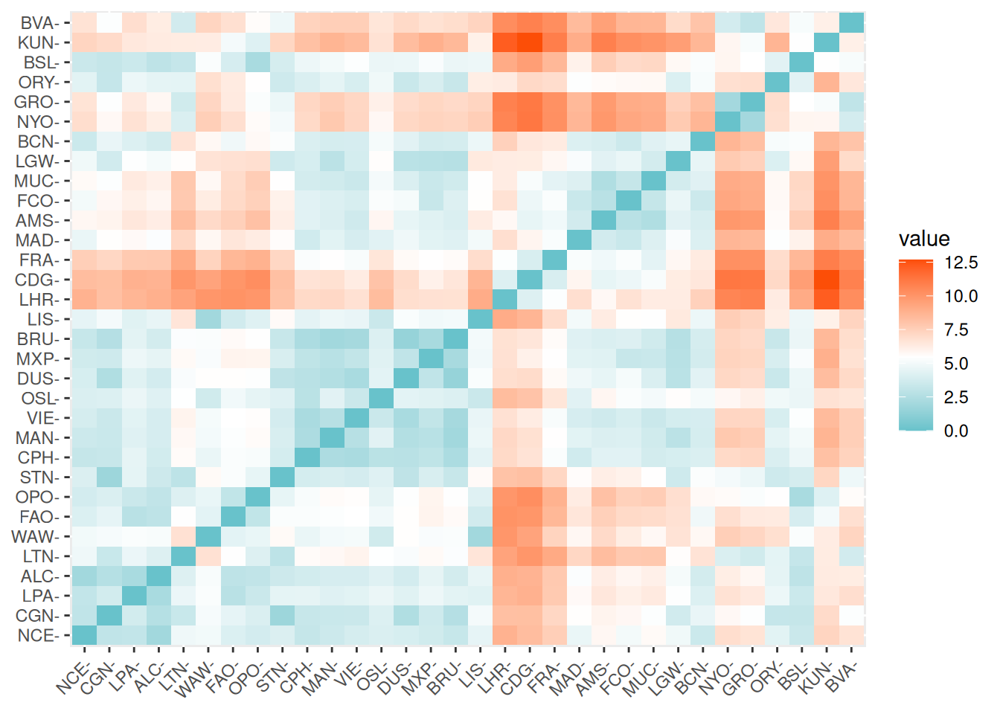
By the color codes, you can have a clue of the airports that are more similar.
8.3.2 Types of hierarchical clustering
There are many types of hierarchical clustering. We will explore some of them:
- Single linkage (nearest neighbour) clustering algorithm
- Complete linkage (Farthest neighbour) clustering algorithm
- Average linkage between groups
- Ward`s method
- Centroid method
Single linkage
The single linkage method (which is closely related to the minimal spanning tree) adopts a ‘friends of friends’ clustering strategy.
This clustering algorithm is based on a bottom-up approach, by linking two clusters that have the closest distance between each other.
cluster_single = hclust(distance, "single")
# dendogram
plot(
cluster_single,
xlab = "Distance - Single linkage",
hang = -1, # all to the bottom
cex = 0.6 # label text size
)
rect.hclust(cluster_single, k = 4, border = "purple") # cut on the dendogram at 4 clusters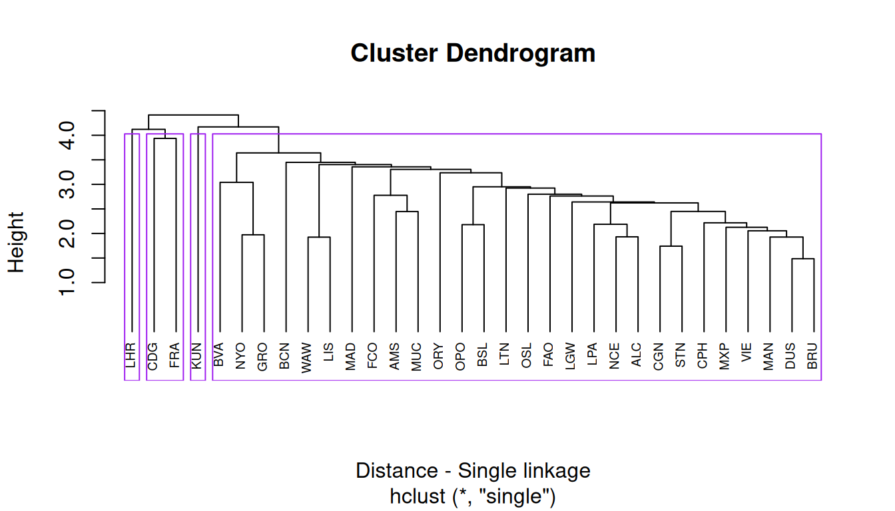
This results in 4 clusters, with Heathrow Airport and Kaunas Airport at their own cluster.
Complete linkage
The complete linkage method finds similar clusters.
Complete linkage is based on the maximizing distance between observations in each cluster.
cluster_complete = hclust(distance, "complete")
# dendogram
plot(
cluster_complete,
xlab = "Distance - Complete linkage",
hang = -1, # all to the bottom
cex = 0.6 # label text size
)
rect.hclust(cluster_complete, k = 4, border = "blue") # cut on the dendogram at 4 clusters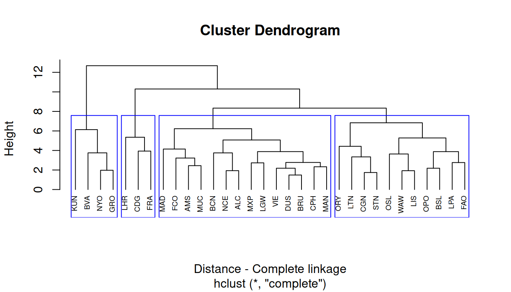
Average linkage
The average linkage considers the distance between clusters to be the average of the distances between observations in one cluster to all the members in the other cluster.
cluster_average = hclust(distance, "average")
# dendogram
plot(
cluster_average,
xlab = "Distance - Average linkage",
hang = -1, # all to the bottom
cex = 0.6 # label text size
)
rect.hclust(cluster_complete, k = 4, border = "red") # cut on the dendogram at 4 clusters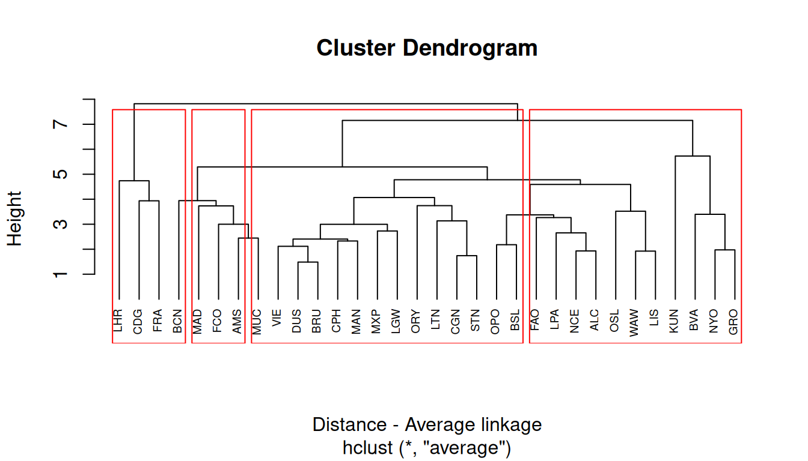
Ward`s method
Ward’s minimum variance method aims at finding compact, spherical clusters.
The Ward`s method considers the measures of similarity as the sum of squares within the cluster summed over all variables.
cluster_ward = hclust(distance, "ward.D2")
# dendogram
plot(
cluster_ward,
xlab = "Distance - Ward's method",
hang = -1, # all to the bottom
cex = 0.6 # label text size
)
rect.hclust(cluster_complete, k = 4, border = "orange") # cut on the dendogram at 4 clusters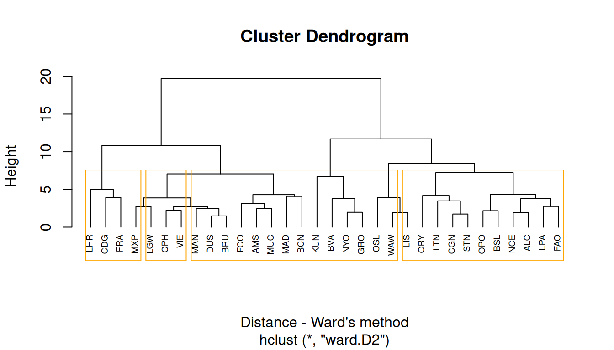
Centroid method
The centroid method considers the similarity between two clusters as the distance between its centroids.
cluster_centroid = hclust(distance, "centroid")
# dendogram
plot(
cluster_centroid,
xlab = "Distance - Centroid method",
hang = -1, # all to the bottom
cex = 0.6 # label text size
)
rect.hclust(cluster_complete, k = 4, border = "darkgreen") # cut on the dendogram at 4 clusters
As mentioned in R Core Team (2025), note however, that methods centroid are not leading to a monotone distance measure, or equivalently the resulting dendrograms can have so called inversions or reversals which are hard to interpret, but note the trichotomies in Legendre and Legendre (2012) .
8.3.3 Comparing results from different hierarchical methods
Now let’s assess the membership of each observation with the cutree function for each method.
number_clusters = 4 # change here
member_single = cutree(cluster_single, k = number_clusters)
member_complete = cutree(cluster_complete, k = number_clusters)
member_average = cutree(cluster_average, k = number_clusters)
member_ward = cutree(cluster_ward, k = number_clusters)
member_centroid = cutree(cluster_centroid, k = number_clusters)We can make a table of cluster memberships for each observation to each cluster method, and compare them with a color code.
Code
# make a data frame
cluster_membership = data.frame(member_single,
member_complete,
member_average,
member_ward,
member_centroid
)
# manipulate data for plot
cluster_long = cluster_membership |>
rownames_to_column(var = "airport") |> # keep airport names
pivot_longer(
cols = starts_with("member_"),
names_to = "method",
values_to = "cluster") |>
mutate(method = gsub("member_", "", method), # clean names
method = factor(method, # preserve the label order
levels = c("single", "complete", "average", "ward", "centroid")))
# plot
ggplot(cluster_long,
aes(x = method,
y = airport,
fill = factor(cluster))) +
geom_tile(color = "white") +
scale_fill_brewer(palette = "Set3", name = "Cluster") +
theme_minimal() +
labs(title = "Cluster memberships by method",
x = "Clustering method",
y = "Airport") +
theme(axis.text.y = element_text(size = 6))
Compare how common each method is to each other:
table(member_complete, member_average) # complete linkage vs. average linkage member_average
member_complete 1 2 3 4
1 14 0 0 0
2 11 0 0 0
3 0 3 0 0
4 0 0 3 1table(member_complete, member_ward) # complete linkage vs. ward's method member_ward
member_complete 1 2 3 4
1 2 12 0 0
2 11 0 0 0
3 0 0 3 0
4 0 0 0 4
Your turn
Try comparing other methods, and evaluate how common they are.
8.3.4 Silhouette Plots
The silhouette plot evaluates how similar an observation is to its own cluster compared to other clusters. The clustering configuration is appropriate when most objects have high values.
Low or negative values indicate that the clustering method is not appropriate or the number of clusters is not ideal.
plot(silhouette(member_single, distance))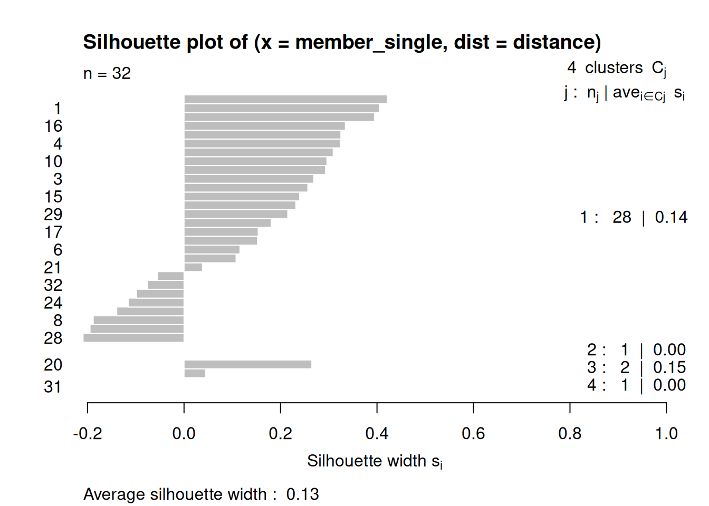
plot(silhouette(member_complete, distance))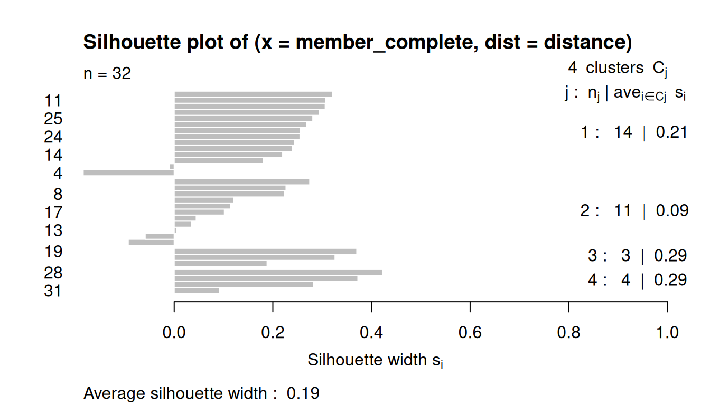
plot(silhouette(member_average, distance))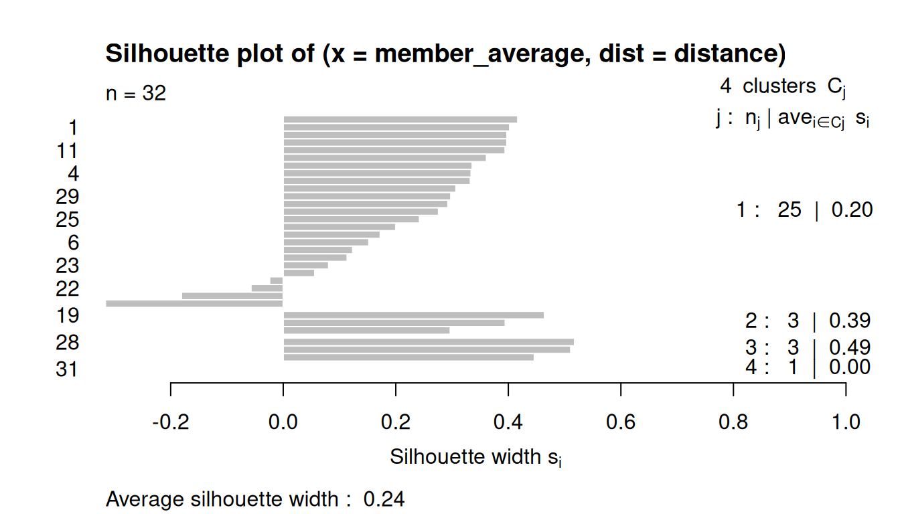
plot(silhouette(member_ward, distance))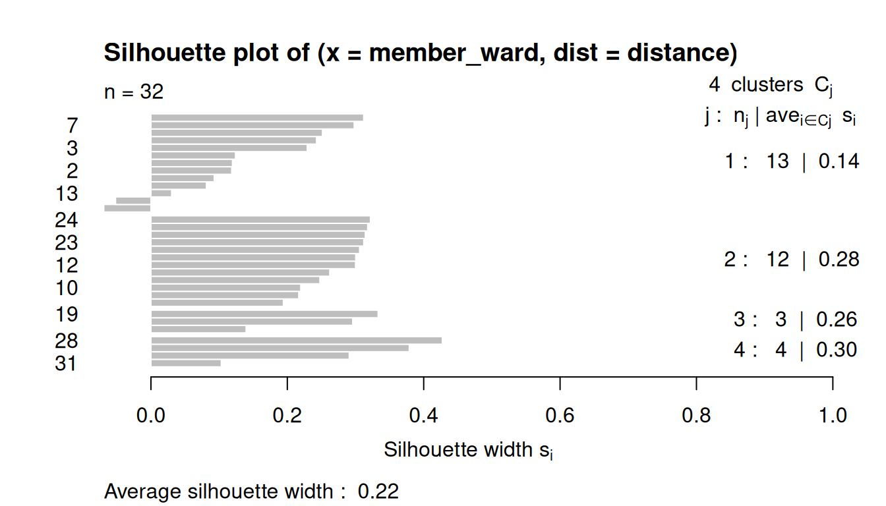
plot(silhouette(member_centroid, distance))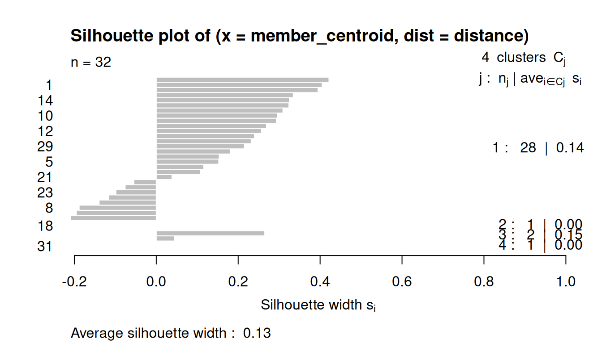
8.4 Non-Hirarchical Clustering
Non-hierarchical clustering is a method that partitions data points into a predetermined number of clusters, denoted by 𝑘, without creating a nested tree-like structure.
Unlike hierarchical clustering, it requires the user to specify 𝑘 in advance and uses an iterative algorithm to optimize a criterion, such as minimizing the variance within each cluster.
Popular examples include K-Means and K-Medoids, which assign points to the nearest cluster center (centroid or medoid) and repeat the process until the cluster assignments no longer change significantly.
In this exercise, we will use the K-means clustering.
8.4.1 Choose the number of clusters
We can observe a measure of the goodness of the classification for each k-means, using the following ratio:
\[\frac{Between_{SS}} {Total_{SS}}\]
SS stands for Sum of Squares, so it’s the usual decomposition of deviance in deviance “Between” and deviance “Within”. Ideally you want a clustering that has the properties of internal cohesion and external separation, i.e. the BSS/TSS ratio should approach 1.
This algorithm will detect how many clusters, from 1 to 10, explains more variance, with less clusters:
# loop for the 10 cluster trials
kmeans_diagnostic = data.frame()
for (i in 1:10) {
km = kmeans(data_scaled, centers = i)
km_diagn = data.frame(
k = i,
between_ss = km$betweenss,
tot_ss = km$totss,
ratio = km$betweenss / km$totss
)
kmeans_diagnostic = rbind(kmeans_diagnostic, km_diagn)
}
# marginal improvements for each new cluster
kmeans_diagnostic = kmeans_diagnostic |>
mutate(marginal = ratio - lag(ratio))
kmeans_diagnostic k between_ss tot_ss ratio marginal
1 1 1.136868e-13 558 2.037399e-16 NA
2 2 1.972975e+02 558 3.535798e-01 0.353579811
3 3 2.696136e+02 558 4.831784e-01 0.129598611
4 4 3.251070e+02 558 5.826290e-01 0.099450580
5 5 3.530672e+02 558 6.327369e-01 0.050107861
6 6 3.910220e+02 558 7.007563e-01 0.068019418
7 7 4.152430e+02 558 7.441631e-01 0.043406837
8 8 4.165355e+02 558 7.464794e-01 0.002316306
9 9 4.400517e+02 558 7.886232e-01 0.042143776
10 10 4.527418e+02 558 8.113652e-01 0.022742049Plot the ratio into a scree plot
plot(kmeans_diagnostic$k, kmeans_diagnostic$ratio,
type = "b",
ylab = "Between SS / Total SS",
xlab = "Number of clusters")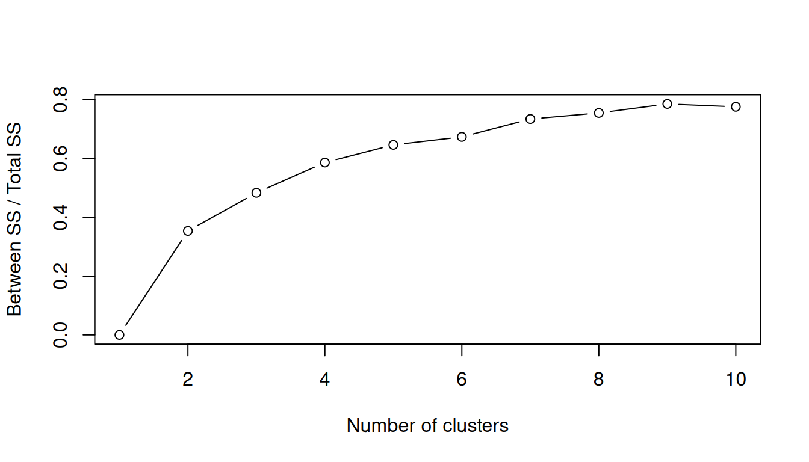
8.4.2 Predetermined number of clusters
In this case we will use the K-means clustering, and define k = 3 (3 clusters).
Here are the cluster results.
km_clust = kmeans(data_scaled, centers = 3) # k = 3
km_clust # print the resultsK-means clustering with 3 clusters of sizes 13, 3, 16
Cluster means:
Passengers Movements Numberofairlines Mainairlineflightspercentage
1 0.3723812 0.5318260 0.6536081 -0.5369457
2 2.2082860 1.9174235 1.5633070 -0.2919658
3 -0.7166133 -0.7916255 -0.8241767 0.4910120
Maximumpercentageoftrafficpercountry NumberofLCCflightsweekly
1 -0.5482732 0.6017682
2 -0.7482433 1.5198394
3 0.5857676 -0.7739065
NumberofLowCostAirlines LowCostAirlinespercentage Destinations
1 0.5259607 -0.6300025 0.6546048
2 -0.2251255 -0.9329811 1.1819686
3 -0.3851321 0.6868110 -0.7534855
Average_Route_Distance DistancetoclosestAirport
1 0.2716778 -0.4720463
2 2.1737031 -0.2311652
3 -0.6283075 0.4268811
DistancetoclosestSimilarAirport AirportRegionalrelevance Distancetocitykm
1 0.1986251 0.236275 -0.2466218
2 0.1667423 0.190403 -0.2415823
3 -0.1926471 -0.227674 0.2456769
Inhanbitantscorrected numberofvisitorscorrected GDPcorrected Cargoton
1 0.5661361 0.3350867 0.3425757 -0.1502862
2 0.9414886 1.6718238 1.5164455 2.9391006
3 -0.6365147 -0.5857249 -0.5626763 -0.4289738
Clustering vector:
NCE CGN LPA ALC LTN WAW FAO OPO STN CPH MAN VIE OSL DUS MXP BRU LIS LHR CDG FRA
3 3 3 3 3 3 3 3 3 1 1 1 3 1 1 1 3 2 2 2
MAD AMS FCO MUC LGW BCN NYO GRO ORY BSL KUN BVA
1 1 1 1 1 1 3 3 1 3 3 3
Within cluster sum of squares by cluster:
[1] 86.77173 20.38512 193.76889
(between_SS / total_SS = 46.1 %)
Available components:
[1] "cluster" "centers" "totss" "withinss" "tot.withinss"
[6] "betweenss" "size" "iter" "ifault" If we want to export the cluster means for each variable and the cluster membership for each observation:
# cluster means for each variable
var_cluster_means = data.frame(cluster = 1:nrow(km_clust$centers),
size = km_clust$size,
km_clust$centers)
# cluster membership for each observation
obs_cluster_member = data.frame(km_clust$cluster)8.4.3 Plotting the clusters
Finally, plot again the Numberofairlines against the Destinations and observe the clusters results to check if they make sense.
# add cluster membership to original data
data_clust = data |> mutate(cluster = factor(km_clust$cluster))
# plot
ggplot(data_clust, aes(x = Destinations, y = Numberofairlines, color = cluster)) +
geom_point(size = 3, alpha = 0.7) +
geom_text(aes(label = Airport), vjust = 1.5, size = 3, show.legend = FALSE) +
scale_color_brewer(palette = "Set1") +
labs(
title = "Airports clustered by k-means",
x = "Number of destinations",
y = "Number of airlines",
color = "Cluster"
) +
theme_minimal()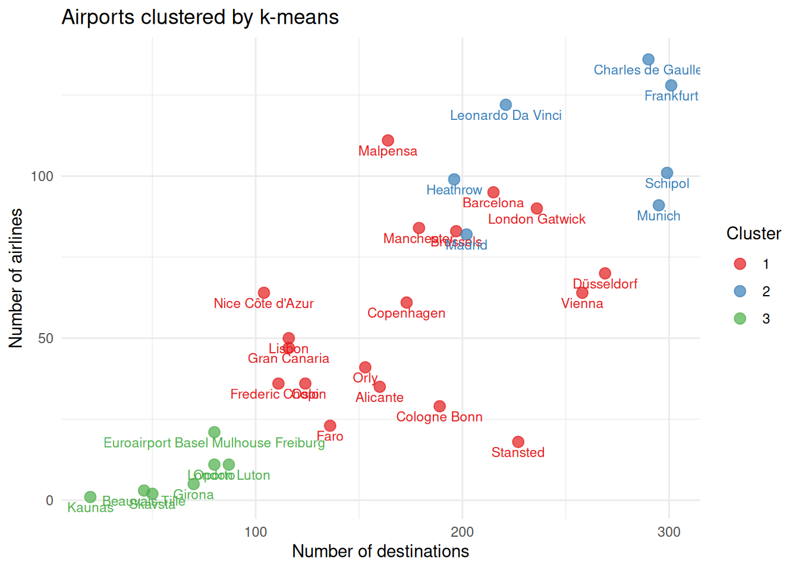
What if… ?
Imagine that one of the airports was not operating any more.
Remove one airport from the data, at your choice, and re-run the cluster analysis.
How different are the results? 🤔